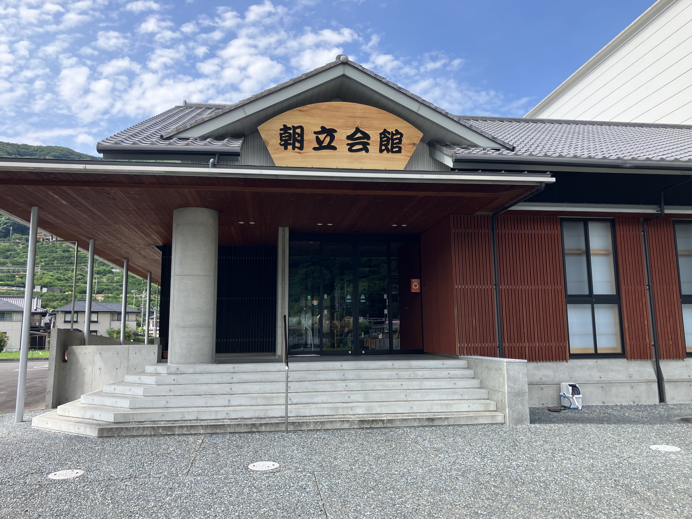

| 項目 | 年代 | 指定区分 |
|---|---|---|
| 朝日文楽人形頭・衣装道具一式 | 昭和34年 | 県民俗資料（指定） |
| 昭和52年 | 県有形民俗文化財（指定替） | |
| 朝日文楽 | 昭和39年 | 県無形文化財（指定） |
| 昭和52年 | 県無形民俗文化財（指定替） |

明治12年（1879）朝立浦に住む井上伊助氏が、松の瘤（こぶ）や桐の木で、人形の頭（かしら）・胴体・手足を作り、衣装を着せ、浄瑠璃（じょうるり）に合わせ人形を操っていた。やがてそこに同志が集まり、公開したのが朝日文楽の起こりであるといわれる。
明治22年（1889）平松六之丞座（山田村）を、明治40年（1907）には吉村源之丞座（柳井村）、釜の倉座（双岩村）をそれぞれ購入して「朝日座」を創設し、翌年の旧正月には、第一回の文楽公演が行われた。この時購入した「八段返し（はったんがえし）」は、県下でも珍しい文化財である。
その後、明治後期から大正初期、戦後の困難な時代を経て、昭和21年（1946）、芸を大阪文楽に移行したことを契機に、「朝日座」を「朝日文楽」とした。
昭和36年（1961）1月、「朝日文楽保存会」が結成され、昭和52年（1977）、三瓶町民の寄附と三瓶町の補助を受け、朝立二区に念願の朝日文楽会館が建設された。
これら「人形頭・衣装道具一式」の保存はもとより、「三瓶高校文楽部」や「こども朝日文楽クラブ」等、後進の育成にも努め、地域をあげ、世代を超えた保存継承活動は特筆すべきことである。
当会館は、朝日文楽会館の老朽化に伴い、その機能の一部を引き継ぎ、伝統芸能の保存継承活動及び地域伝統文化を支える一端を担うものである。